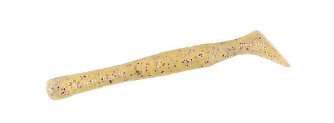
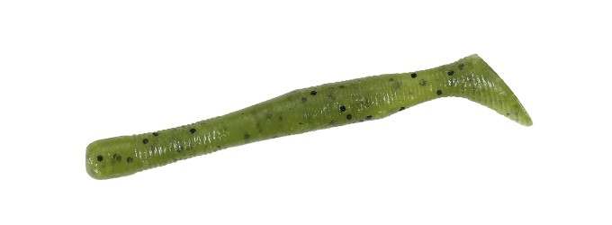
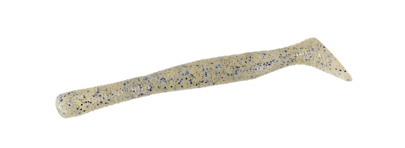
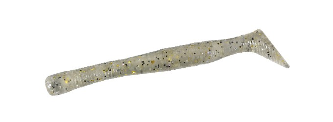

レアリス リグルシャッド2.5
（REALIS WRIGGLE SHAD 2.5）
レアリス リグルシャッド2.5（REALIS WRIGGLE SHAD 2.5）はDUO（デュオ）のソフトベイト（シャッドテールワーム）です。
DUOのバス用ブランド「レアリス」から登場した、扁平ツイストボディのシャッドテールワームです。キャッチコピーは「くねくねマシマシ！！」。流れを捉えるテールと、艶めかしく動くリグルボディの相乗効果で、生命感あふれる左右への複雑なロールアクションを生み出すのが最大の魅力です。

画像出典:DUO公式HP
スペック
- メーカー
- DUO（デュオ）
- タイプ
- シャッドテールワーム
- 全長
- 2.5インチ（64mm）
- 入数
- 15本
- カラー
- 全10色
- ターゲット
- ブラックバス
- 価格
- 880円（税込）
- 発売
- 2026年10月
▼今すぐチェック

レアリス リグルシャッド2.5の特徴
小さなボディに喰わせの動きを凝縮した、ベイトフィッシュサイズのシャッドテール
-
扁平ツイストボディがテールの波動を全身へ
ねじれた扁平ボディが、テールの波動を全身に伝える。テールだけでなくボディ全体がくねり、より生き物らしい動きになる。
-
左右への複雑なロールアクション
流れを的確に捉えるテールと、艶めかしく動くリグルボディの相乗効果で、生命感あふれる左右への複雑なロールアクションが発生する。
-
ベイトフィッシュを意識した2.5インチ
様々なフィールドにマッチする、ベイトフィッシュを意識したジャストベイトサイズ。小さなボディに喰わせる動きを凝縮し、バスに違和感を与えにくい。
レアリス リグルシャッド2.5の使い方
基本はただ巻き。ジグヘッドリグやノーシンカーで、テールとボディがくねる速度でゆっくり巻いてくる。小さなワームなので、軽めのリグで中層をスローに通すのが使いやすい。
流れのある場所では、流れにテールを乗せるように巻くとロールアクションが出やすい。反応がない時は、巻く速度やレンジを変えて、その日のバスが反応する層を探りましょう。
レアリス リグルシャッド2.5の得意な状況
小魚（ワカサギや小鮎など）を食べているバスを狙う状況が最大の出番。
プレッシャーが高く、大きなルアーには反応しない時に、ベイトサイズで自然に食わせたい場面で選びたい1本です。
ワンポイント
カラーはスジエビやスモークシュリンプなどのエビ系、ワカサギやブルーギルなどのベイト系がそろっています。その日のベイトに合わせて選びましょう。
DUOのスタッフレポートでは、リザーバーなどでの使用例も紹介されています。
オススメカラー
レアリス リグルシャッド2.5は全10色展開。バス釣りでオススメのカラーを紹介します。

F048 ワカサギワカサギを食べているバスに合わせるベイトカラー。

F002 ウォーターメロンシードクリアな水で自然に見せられる定番色。

F030 スジエビエビを意識したナチュラルカラー。

F063 スモークシュリンプ透け感のあるエビ系カラー。スレたバスに。
画像出典:DUO公式HP
レアリス リグルシャッド2.5に似ているルアー
-
 クネリー4.4インチ
ボトムアップ
詳細はこちら＞
クネリー4.4インチ
ボトムアップ
詳細はこちら＞
自発的にクネるストレートワーム。より大きなシルエットで、カバー周りやフォールで誘いたい時に。
-
 ゴリドラス
ジャッカル
詳細はこちら＞
ゴリドラス
ジャッカル
詳細はこちら＞
ボトムをゴリゴリ擦って誘うスイムベイト。ボトムのバスを狙いたい時の持ち替え先に。
-
 クラッシュシティ インフィルトレイター
ラパラ
詳細はこちら＞
クラッシュシティ インフィルトレイター
ラパラ
詳細はこちら＞
エラストマー製のスイムベイト。シャッドテール系で選択肢が重なる1本。